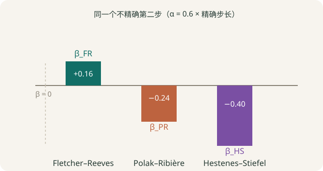

5.2.2 Polak–Ribière 方法与变体：β 公式的分歧
Fletcher–Reeves 用梯度平方范数之比，Polak–Ribière 改用相邻梯度之差与当前梯度的内积。只要线搜索精确，二者连同 Hestenes–Stiefel 给出同一个 β；一旦线搜索不精确，它们就会分道扬镳，负系数与停滞随之出现。
为什么改 β
Fletcher–Reeves 的 β_k=‖g_k‖²/‖g_{k−1}‖² 只比较相邻梯度的长度，忽略了梯度方向的变化。当目标接近二次、梯度方向变化平稳时这没问题；但迭代进入曲率剧变的区域时，梯度可能几乎反转，而 FR 仍给出较大的正 β，把上一步方向强行保留，使新方向变差甚至停滞。
更自然的做法是让 β 度量“梯度改变了多少”：若相邻梯度方向一致（g_k≈g_{k−1}），说明旧方向仍有用；若 g_k 与 g_{k−1} 近乎相反，就应放弃旧方向、退回最速下降。这引出 Polak–Ribière 系数。
把 g_{k−1} 与 g_k 画在同一起点，它们的差 y_k=g_k−g_{k−1} 度量梯度的变化。Polak–Ribière 用 g_k 与 y_k 的内积作分子，因此梯度反向变化时它能为负。
Polak–Ribière 系数
记 y_k=g_k−g_{k−1}，Polak–Ribière 取 β_k^{PR}=g_kᵀy_k/‖g_{k−1}‖²。算法结构与 FR 完全相同，只是把 β_k 换成这个分子包含梯度差的形式：方向仍为 p_k=−g_k+β_k^{PR}p_{k−1}。
展开分子：g_kᵀ(g_k−g_{k−1})=‖g_k‖²−g_kᵀg_{k−1}。当 g_k 与 g_{k−1} 正交时第二项为零，β^{PR} 退化为 β^{FR}。而当梯度方向发生逆转、g_kᵀg_{k−1} 变为较大的正数时，分子可能为负，β^{PR} 也就变成负数 —— 这正是它比 FR 更“会谴责旧方向”的体现，也是下一节处理的重点。

Hestenes–Stiefel 与 PR+
Hestenes–Stiefel 把分母换成 y_k 与上一步方向的内积：β_k^{HS}=g_kᵀy_k/p_{k−1}ᵀy_k。它不依赖 ‖g_{k−1}‖，但对分母敏感；在精确线搜索下与 PR 相等，不精确时往往给出更大的负值。
由于 PR 在无约束问题上的实际表现通常优于 FR，而它偶尔取负会破坏下降性，常用的修正是 Polak–Ribière+（PR+）：β_k^{PR+}=max(0, β_k^{PR})。当 β^{PR}<0 时它退回最速下降方向 p_k=−g_k，保证方向下降，代价是丢弃旧方向的记忆。
精确线搜索下的等价
设上一段沿 p_{k−1} 精确搜索，且在正定二次目标上相邻梯度正交 g_kᵀg_{k−1}=0。精确线搜索的一阶条件给出 g_kᵀp_{k−1}=0；对二次函数又有 p_{k−1}ᵀy_k=p_{k−1}ᵀQ(x_k−x_{k−1})=α_{k−1}p_{k−1}ᵀQp_{k−1}。
由 α_{k−1}=−g_{k−1}ᵀp_{k−1}/(p_{k−1}ᵀQp_{k−1})，分母 α_{k−1}p_{k−1}ᵀQp_{k−1}=−g_{k−1}ᵀp_{k−1}。又 g_{k−1}ᵀp_{k−1}=g_{k−1}ᵀ(−g_{k−1}+β_{k−1}p_{k−2})=−‖g_{k−1}‖²，因为 g_{k−1}ᵀp_{k−2}=0。于是 β^{HS} 的分母等于 ‖g_{k−1}‖²；而分子 g_kᵀy_k=‖g_k‖²−g_kᵀg_{k−1}=‖g_k‖²。因此 β^{HS}=β^{PR}=β^{FR}=‖g_k‖²/‖g_{k−1}‖²，三式在精确线搜索下完全一致。
不精确线搜索下的分歧
把第二步改成只走精确步长的 c 倍，线搜索就不再精确，上面的正交关系全部失效。以 5.2.1 的同一二次问题为例：第一步精确，第二步取 c=3/5，得到 x_2=(404/365, 697/365)，g_2=(84/365, −12/73)。
此时三种公式给出 β^{FR}=4/25=0.16，β^{PR}=−6/25=−0.24，β^{HS}=−2/5=−0.40。FR 仍为正，PR 与 HS 已为负：若继续用 β^{PR} 会得到上升方向，而 β^{PR+}=max(0,−6/25)=0 退回最速下降。这些数值由本页 Python 用精确分数断言核验，属于教学算例，不代表一般问题上的排序。
交互：线搜索不精确到什么程度会翻转 β
固定 5.2.1 的二次问题与第一步，拖动滑块改变第二步的伸缩因子 c（c=1 为精确步长）。观察三种 β 如何随 c 偏离精确值而分化：c 接近 1 时三者都接近 0，c 变小后 FR 变正、PR 与 HS 变负，而 PR+ 始终不小于 0。该计算为教学示意。
实时模型计算
Python：三种 β 的分数断言
下面的程序只依赖标准库，在固定二维二次问题上分别实现 FR、PR、HS 三种系数，并断言精确与不精确两种情形下的数值。
"""Polak-Ribiere, Hestenes-Stiefel and Fletcher-Reeves beta on a 2x2 quadratic."""
from fractions import Fraction
Q = ((3, 1), (1, 3))
b = (5, 7)
def matvec(M, v):
return (M[0][0]*v[0] + M[0][1]*v[1], M[1][0]*v[0] + M[1][1]*v[1])
def dot(u, v):
return u[0]*v[0] + u[1]*v[1]
def gradient(x):
q = matvec(Q, x)
return (q[0] - b[0], q[1] - b[1])
def substep(x, p, c):
alpha = -dot(gradient(x), p) / dot(p, matvec(Q, p))
return (x[0] + c*alpha*p[0], x[1] + c*alpha*p[1])
def betas(g_prev, g_now, p_prev):
y = (g_now[0] - g_prev[0], g_now[1] - g_prev[1])
num = dot(g_now, y)
return (dot(g_now, g_now) / dot(g_prev, g_prev),
num / dot(g_prev, g_prev),
num / dot(p_prev, y))
if __name__ == "__main__":
x = (Fraction(0), Fraction(0))
g0 = gradient(x)
p0 = (-g0[0], -g0[1])
x1 = substep(x, p0, Fraction(1))
g1 = gradient(x1)
fr1 = dot(g1, g1) / dot(g0, g0)
p1 = (-g1[0] + fr1*p0[0], -g1[1] + fr1*p0[1])
x2 = substep(x1, p1, Fraction(3, 5))
fr, pr, hs = betas(g1, gradient(x2), p1)
assert (fr, pr, hs) == (Fraction(4, 25), Fraction(-6, 25), Fraction(-2, 5))
exact = betas(g1, gradient(substep(x1, p1, Fraction(1))), p1)
assert exact == (Fraction(0), Fraction(0), Fraction(0))
print("inexact c=3/5 -> FR, PR, HS =", fr, pr, hs, "| PR+ =", max(Fraction(0), pr))